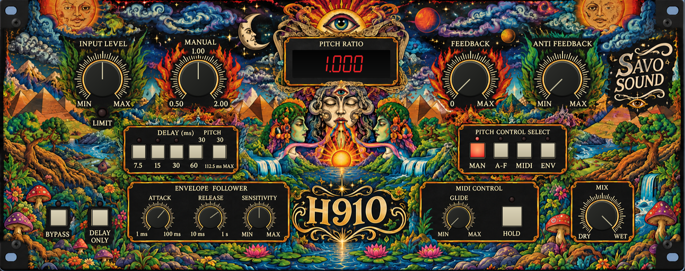

H910 is a stereo pitch-shifting and delay processor inspired by the legendary Eventide H910 Harmonizer, originally introduced in 1975.
The original H910 helped establish pitch shifting as a creative studio effect, allowing engineers and producers to manipulate pitch independently of playback speed. Its distinctive combination of pitch shifting, delay and feedback became part of the sound of countless recordings.
H910 is our interpretation of that concept, combining a modern high-resolution pitch engine with an analogue-inspired signal path. Input and output transformer models, amplifier stages, filtering and compander behaviour contribute to the character of the processing, while the pitch engine is designed for smooth transitions and detailed audio reproduction.
PITCH CONTROL
Pitch can be controlled manually, through incoming MIDI notes or by an envelope follower responding to the input signal. MIDI control includes pitch bend, adjustable glide and a hold function, allowing the processor to be played directly from a keyboard or programmed through a DAW.
The pitch range extends one octave below and one octave above the original signal.
DELAY & FEEDBACK
Selectable delay times and adjustable feedback allow H910 to move beyond conventional pitch shifting into repeating, evolving and harmonically layered effects. A dedicated delay-only mode provides additional flexibility without requiring pitch processing.
STEREO CHORUS
An independent stereo chorus introduces gentle pitch movement and modulation across the stereo field. It can be combined with manual or MIDI-controlled pitch shifting, adding width and movement without replacing the selected pitch.
A CLASSIC CONCEPT, REINTERPRETED
H910 is not a component-for-component recreation of the original hardware. It combines analogue-inspired processing with a modern digital pitch engine, preserving the creative philosophy of the H910 while introducing stereo operation, MIDI integration and contemporary processing capabilities.
From subtle detuning and stereo movement to radical pitch transformations and evolving feedback textures.
Unzip the downloaded file and copy H910.vst3 to:
~/Library/Audio/Plug-Ins/VST3/Restart your DAW and rescan your plugins if necessary.
DOWNLOADUnzip the downloaded file and copy H910.vst3 to:
C:\Program Files\Common Files\VST3\Restart your DAW and rescan your plugins if necessary.
DOWNLOADMIDI CONTROL
To control pitch using MIDI notes, select MIDI mode on H910 and route MIDI from your DAW to the plugin. Depending on the DAW, this may require a separate MIDI track or MIDI Out channel. MIDI note 60 corresponds to unity pitch, with a range of one octave above and below.